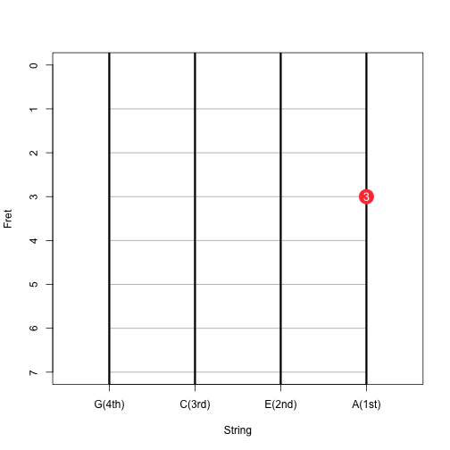

Ukulele is known as the small Hawaiian guitar.
A picture of my ukulele.
Heather
Madison Area Ukulele Initiative
Ukulele is known as the small Hawaiian guitar.
A picture of my ukulele.
There are only four strings so it is much easier to learn comparing to guitar. For example you only have to press the third fret on the first string to play the C major chord.

In uku chords you can select the chord you want by selecting the key and the variation.
Show a screenshot
The numbers in the circle are fingering suggestings. 1 is for the index finger, 2 is for the middle finger, etc. So for chord Fm7, I'm not suggesting you have 3 index finger but press the whole finger on the first fret to form a bar.